In the last few sections, you've learned how to help your
objects make decisions. You even taught your objects a little
philosophy, (how to tell truth from lies), with the introduction
of the boolean primitive type.
Now it's time to teach your objects to work without constant supervision. Once you teach them the skill of iteration, you can turn them loose with a set of instructions, and not come back until the job is done.
What is iteration? Iteration is a Computer Science term that simply means repeating a set of actions. Iteration is also called repetition or looping. The statements that are used in iteration are called loops.
Let's start by comparing iteration to something you're already
familiar with: the if statement.
Iteration and Selection
Both iteration statements and selection statements
are called flow-of-control statements; they control
which code is executed inside your program. Like the
if statement, iteration is based upon evaluating a
boolean—true/false—condition, and then
performing a set of actions if the test is true, and
skipping them if the test is false.
Thus a loop, like an if statement, has both a
condition part—the test that is performed—and a
body part—the actions that are taken.
Selection Illustrated
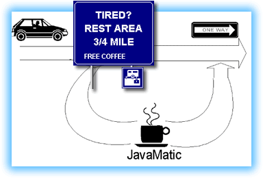
Iteration, however, is not the same as selection. Beginning programmers often attempt to use a selection statement where they should use a loop, and vice versa. It is important to be able to distinguish the two, and equally important to be able to select the right control structure for the job.The selection structure works much like the illustration shown here. Driving down a divided highway, you come to a rest stop, and you pull off. When you leave the rest stop, you rejoin the highway a little further down the road.
Once you rejoin the highway, you have no opportunity to go back, and revisit the rest stop again. Those who bypass the turnoff, skip the rest stop altogether.
Iteration Illustrated
A loop structure looks similar, but not the same. As you can see
in this illustration, there is still a boolean test,
as there is with selection. But, after you've had your break, the
rest stop exit road "loops back" (hence the name), and you rejoin
the highway right where you initially left it.

If you like, you can choose to enter the rest stop once again, even though the highway is one-way. In this sense, a loop also works a little bit like a cloverleaf interchange.
Java and Iteration
Java has three loop statements,
the while loop,
the do-while loop, and the
for loop. As you might expect, each of these
loops is designed for a particular purpose; each loop has a
place where it is most effectively employed.
Where's the Test?
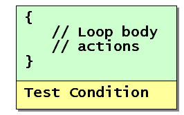
One difference between the loops is where theboolean conditional test takes place—that is,
the relative position of the loop test, and the actions contained
in the loop body.
One loop, the do-while loop, doesn't
make its test until after it has performed the actions
in the loop body at least once.
This is called a "test at the bottom" loop. It is also sometimes called a hasty loop or an unguarded loop, because it "leaps before it looks".
Test at the Top
 The other two loops, the
The other two loops, the for loop and
the while loop, both make their boolean
test before performing the actions in the loop body.
With these "test-at-the-top" loops, when the test condition is false, then the actions inside the loop body are never performed at all. Thus, they are both guarded loops.
Counted and Indefinite Loops
Classifying loops according to where their condition is tested helps keep the Java syntax straight in our minds, but it's not really very useful when it comes to deciding which loop to use when you are writing a program. As a practical matter, it's much more useful to classify loops by the kind of bounds that they employ.
A loop's bounds are the conditions under which it will repeat its actions. In a simple, counter controlled loop, the bounds might be expressed as "the counter has a value less than ten". In other, more complex loops, the bounds may be a combination of conditions involving ANDs and ORs.
There are two major kinds of loops that can be built
using the basic building blocks (for,
while, and do-while)
provided by Java. Let's look at them briefly, before we start
looking at the actual Java syntax.
Counting or Counted Loops
 A counting, (or counted), loop is a
loop that repeats its actions a fixed number of times--a
"gimme fifty pushups" kind of loop.
A counting, (or counted), loop is a
loop that repeats its actions a fixed number of times--a
"gimme fifty pushups" kind of loop.
With a "pure" counting loop you can look at the
code and tell how many times it should execute. In real life,
however, things are not so clear-cut. You often won't know what
the actual number of repetitions is until your program
runs; the number of repetitions may be based upon the
number of characters in a String, for instance,
or some other number which is not computed until your program
runs.
Indefinite Loops
With an indefinite loop, you can never tell how many times the loop will repeat by examining the code. An indefinite loop is a loop that tests for the occurence of a particular event, not a count of the number of repetitions.
 "Read characters until you encounter a period"
is an example of an indefinite loop. The condition may occur
after reading three characters, or it may occur after reading
three-thousand. It's also possible that the period might be the
first character read or, sometimes, that a period might not occur
at all.
"Read characters until you encounter a period"
is an example of an indefinite loop. The condition may occur
after reading three characters, or it may occur after reading
three-thousand. It's also possible that the period might be the
first character read or, sometimes, that a period might not occur
at all.
There are three commonly encountered types of indefinite loops that you should be aware of. Each of these indefinite loops uses a different sort of bounds:
- Data loop: A data loop is a loop that keeps going until there is no more data. This is used when reading files or sending Web pages over the Net.
- Sentinel loop: A sentinel loop is an indefinite loop that looks for the presence of a special marker contained within its input. In the "read characters until you encounter a period" example, the period is the sentinel; this kind of loop is a sentinel loop. Sentinel loops are often used in searching, but have other uses as well.
- Limit loop: Limit loops are loops that end when another repetition of the loop won't get you any closer to your goal. Limit loops are often used in scientific calculations and other numeric algorithms, when stating a precise termination condition is not possible. Often this involves monitoring the difference between two variables, and stopping the loop when the difference passes a predetermined threshold.
Now that you know a little about the different kinds of loops,
let's make this a little less theoretical and learn how to
use one of Java's loop statements. We'll start by
taking a look at the for loop.
The for Loop
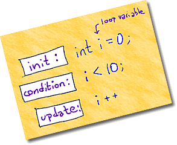
The first Java loop we're going to look at is thefor loop. Even though
its syntax has more "moving parts" than that the
while loop, I think that counted
for loops are a little easier to understand. Both Pascal
and Basic have for loops, as do C and C++. Like
those languages, the for loop in Java is designed
for writing counted loops—loops that repeat a specified number
of times.
Unlike the Pascal or Basic for loop, however,
the for loop in Java can do much more than simple
counted loops. The for loop in Java works almost
exactly like the for loop in C++; it is a general
purpose, "test at the top" loop, that makes writing counted loops
very straightforward, but can be used for other purposes.
The for Loop Syntax
As mentioned previously, the body of the for loop
follows the loop's test condition; you test first, then, if the
test evaluates to true, you enter the loop body, as you can see
in the illustration.
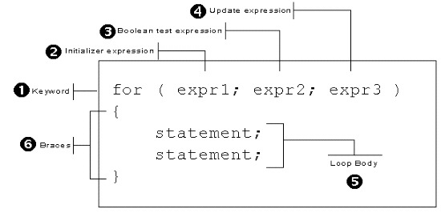
Thefor loop's condition involves more
than a simple boolean test, however. In fact, it
involves three different expressions:
- The initialization expression
- The test expression
- The update expression
Each of these three expressions is separated from the others by a semicolon. You can omit any—or all—of the expressions, but the semicolons are required. (Make sure you don't accidentally use commas instead of semicolons. When you do so, the Java compiler is not particularly helpful with its error messages.)
The loop body following the loop condition is usually enclosed in braces, although, technically, braces are not required if the loop body consists of a single statement. As a practical matter, though, you'll almost always use braces, and, since they don't hurt—even when not strictly required—you should always put them in as a matter of course.
Let's return to the for loop condition,
and take a closer look at each of its three expressions.
The Initialization Expression
When a for loop is encountered, the first
part of the loop condition, the initialization expression, is
executed. It is always executed, regardless of the other
parts of the for statement, almost, (but not
quite), as if it occurred on the previous line.
The initialization expression is evaluated only once, and is
usually used to define the counter variable that will control
your loop, like this:
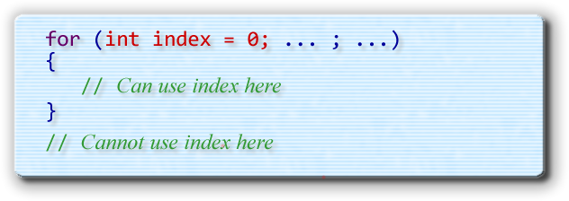
Variables declared inside thefor
loop initialization section, like index, shown here,
are local to the body of the for loop. Once
the loop is finished, the variable goes out of scope and can no
longer be used.
The boolean Test
The second section of the for loop is called
the test condition. The test condition is a
boolean expression which is evaluated immediately
after the initialization expression.
If the test condition is true, (when it is evaluated), then execution begins with the first statement in the loop body. If it is false, then the entire loop body is skipped, and execution continues at the first statement following the loop body.
To continue our example, we can test the value
of index, checking to make sure it is less than ten,
like this:
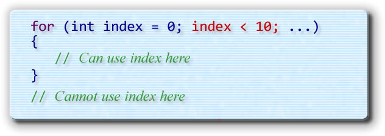
Using index in this fashion insures that the loop will execute ten times. This is a common idiom in Java programming, called zero-based counting:- start index at 0
- test that index is less than the upper bounds
An idiom is just a common and widely accepted way of "phrasing" a particular operation. This particular idiom works well, because you can immediately tell how many times the loop will execute just by glancing at the test condition.
The Update Expression
Inside the body of the loop, you need to make sure that
every repetition of a loop moves closer to the loop bounds.
But, in the for loop shown here, there are
no statements that move toward the bounds; in fact, as
written, this example is an endless loop! Since
index is never updated, it always remains
at zero.
Updating the loop counter is the responsibility of the third part
of the for loop condition—the update
expression. The update expression is evaluated after
the body of the loop is finished, but before the test
expression is evaluated for the next repetition.
For a counted loop, you'll use the update expression
to increment your loop counter like this:
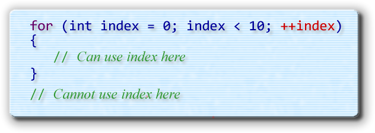
In this case I've used the prefix increment operator to update theindex variable, but postfix works just as well,
since the update expression acts like a standalone statement,
even though it doesn't end in a semicolon like the previous
two expressions.
In this example, I've used a variable named index
as the loop counter. By far the most commonly used name, though, is
the name i (with nested for loops employing
j and k when i is unavailable.)
Even though I generally discourage short, meaningless variable names,
this is such a universal convention, that there's really no point
in fighting it. This also is in no way related to any shadowy
government agency.
Really.
Counting Variations
You've probably noticed that this loop doesn't really do anything; the portion that we've written simply repeats ten times. However, you can use this basic skeleton for any loop that needs to repeat a fixed number of times. Simply replace 10 with the number of times you want to repeat, and you're all set.
In addition to acting as a loop control, you can also use your
counter variable to process different pieces of information
during each repetition of the loop. Here, for instance, is a
loop that sums the Unicode values for all the characters in a
String:
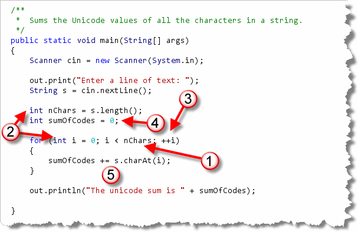
The loop shown here is from CodeSumer.java, a console program that sums up the value of each Unicode character in aString entered
by the user, and tells you how much your String
"weighs". (You'll find it in this chapter's code folder.)
The structure of the for loop follows
six steps that you'll meet in a later chapter when we discuss a
loop-building strategy:
- The first step is to determine what causes the loop to end. This is called the loop bounds. The bounds for our loop is when the loop counter reaches the number of characters in the string.
- To test the counter and number of characters, we first
have to create the loop counter
iand the variablesnChars, ands, so that they can be tested when we get to the bounds. We also have to initialize them, by first reading the text the user entered, usingnextLine(), finding the length of the string, using thelength()method, and initializing the counter in theforloop's initializer section. You'll do these as step 2 of building a loop. - Step 3 is to advance the loop. Advancing the loop
means that it moves closer to the finish. In a counted
forloop, you do that in the update expression. - This loop's output is the sum of all the individual
code values, so Step 4 is to create
and initialize the accumulator variable
sumOfCodesthat will hold the output of the loop. - Since we're adding up all of the Unicode values in the
string, Step 5, the loop operation, is accomplished by extracting
each individual character, using the
charAt()method, and then adding that value to the accumulator. - For the last step we simply print out the loop's results. There's nothing extra we have to test in this case.
Here's what the output of the program looks like with my name entered as input:
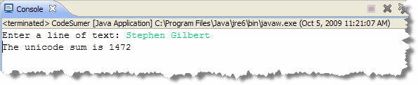
Counting Down
When you create a counted loop using for, you
are responsible for initializing the counter in the
initialization expression, and for updating it in the update
expression; it doesn't happen "automatically" like it does
in BASIC or Pascal.
However, there's no law that says you have to start at zero, and there's nothing to stop you from counting down rather than up.
Here's a code fragment from a Java Applet named
ReverseString that displays the characters in a
String in reverse order. It works by walking
through the characters of the String from the end
to the beginning, using a for loop that:
- initializes
counterto point to the last character, rather than the first - continues until
counterreaches zero - decrements the
counter, so that the loop counts down, instead of counting up.
 You can
run the applet by clicking the link in this
sentence. If you don't want to run it, here's what it looks like
with my name entered into the input field:
You can
run the applet by clicking the link in this
sentence. If you don't want to run it, here's what it looks like
with my name entered into the input field:
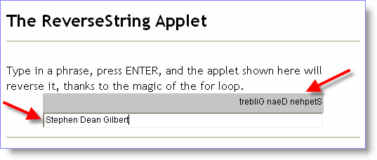
What's with the -1?
You might wonder why the code shown here subtracts one from
the length of the String in the initialization expression.
In a String, the characters are numbered starting with
zero. Thus, if there are 10 characters in a particular
String, then the last character is in position 9.
Counting by Steps
Not only can you count up and count down, you can
also count by values other than 1, simply by changing the value
in the update expression. The BASIC language allows you do
this via its STEP clause, but the Java for loop
allows you to use any expression you like, not just different
constant values.
Here, for instance, is how you could calculate
the sum of all the even numbers less than 100:
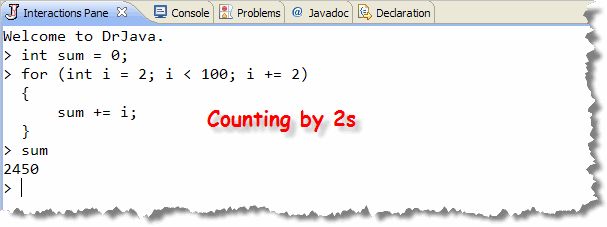
And, here's a loop that displays exponential growth. How many numbers do you think that this will print?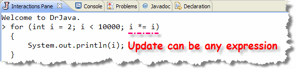
Try it out and see if you're right. In the DrJava Interactions Pane, when you type the opening brace on
a for loop body, DrJava "notices" that you haven't completed
the statement, and waits for the closing brace before interpreting (and
executing) what you've typed. Sometimes, though, you want to type several
lines including initialization and so on before the loop. You can do that
in the Interactions Pane by simply ending your lines with a Shift+Enter
instead of a regular Enter.
Try It Yourself
Here's an exercise you can do in the DrJava Interactions Pane.
- Create a
Stringvariable initialized to your name and student ID#, and a secondStringvariable namedresult. Result will initially be empty, but you'll add characters to it as you process your name and ID. - Write a
forloop that loops through each character in your name. If the character is a vowel, (a, e, i, o, or u), replace it with an asterisk (*) inresult. All other characters should be passed through unchanged.
When the loop is finished, print both your original String
and the modified version.

The for Loop Summary
- Iteration is a CS term that means repeating a group of actions. Programming statements that perform iteration are called loops.
- A loop is a flow-of-control statement similar to
an
ifstatement. Like theif, a loop tests a condition and then performs its actions when the condition is true. Unlike anifstatement, a loop returns to the test condition after performing its actions; thus a loop repeats its actions until its test condition becomesfalse. - One way to categorize loops is where the test takes place. A test-at-the-top, or entry-condition loop, checks its condition before carrying out the actions in its body. This is sometimes called a guarded loop.
- A test-at-the-bottom, or exit-condition loop, performs its actions first, and then checks its condition to see if it should "do it again". This is sometimes called a hasty loop because it "leaps before it looks".
- Another way to categorize loops is by the kind of condition used to control them. The simplest are counter-controlled loops that compare an index or loop counter to determine how many repetitions to perform.
- More complex loops are known as indefinite loops. These include sentinel loops that look for a particular value in input, data loops that keep processing until a data source is exhausted, and limit loops, which monitor the results of a calculation.
- The
forloop is designed for writing counter-controlled loops. - The
forloop header consists of three expressions: the initialization expression where the loop counter is initialized, the test expression where the counter is compared against an ending value, and the update expression where the counter is modified prior to the next iteration. - To write a loop that counts down, initialize the loop counter to the upper bounds, test that the counter is greater than or equal to the lower bounds, and make sure the update expression decrements the counter, instead of incrementing it.
- To count by steps, use an update expression that adds or subtracts the step value to the loop counter.